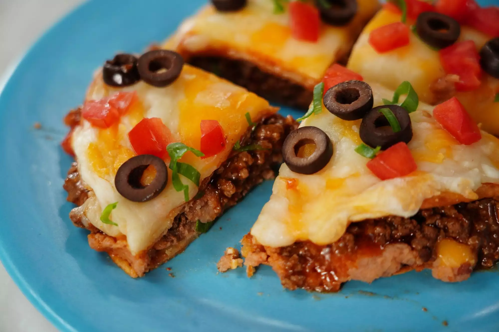

Mexican Pizza

Description
This Tex-Mex pizza, inspired by the beloved Taco Bell® menu item, is loaded up with fresh ingredients and bold
flavor. Our copycat version has all the signature elements of the fast-food favorite, just bigger and beefier than
ever. Skip the drive-thru and give our homemade spin a try for a fun and easy weeknight meal. Add any additional
garnishes you like (such as jalapeños, sour cream, or diced avocado).
Ingredients
- 2 tablespoons vegetable oil
- 8 (8 inch) flour tortillas
- 1 cup refried beans, warmed
- 1 cup cooked, Mexican-seasoned ground beef
- ½ cup taco sauce
- ¼ cup red enchilada sauce
- 1 cup shredded mozzarella cheese
- 1 cup shredded Mexican cheese blend
- ½ cup diced tomatoes
- 3 tablespoons sliced black olives
- 3 tablespoons chopped green onions
Steps
- Heat 1 tablespoon oil in a deep skillet over high heat. Pan-fry each tortilla turning frequently, adding
more oil as needed, until golden brown, 2 to 3 minutes per side. Allow to drain on paper towels.
- Preheat the oven to 400 degrees F (200 degrees C).
- To assemble each pizza, place 4 fried tortillas on a baking sheet. Spread 3 tablespoons of refried beans
evenly on top of every other tortilla, then add 2 to 3 tablespoons ground beef. Place the other 4 tortillas
on top.
- Mix together the taco sauce and enchilada sauce in a small bowl. Spoon 2 tablespoons of the mixture on top
of the tortillas and spread evenly. Sprinkle ¼ cup of each type of cheese evenly on top.
- Bake in the preheated oven until the cheese is melted, 3 to 4 minutes. Remove from the oven and top with
diced tomatoes, black olives, green onions, and any additional garnishes. Cut into quarters, and serve
immediately.